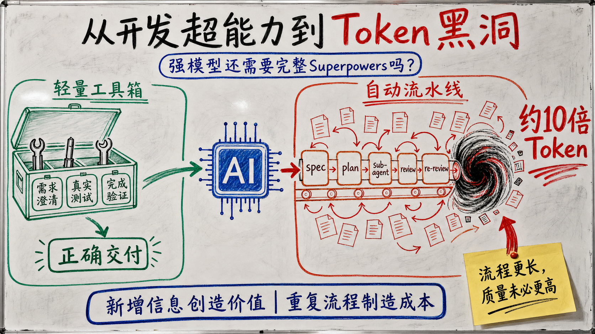
最近，Superpowers的口碑开始反转。
Reddit和X上，越来越多用户抱怨它让简单修改变得缓慢、反复生成规格和计划、频繁启动sub-agent，并快速消耗Token。有人安装两天后就卸载，有人发现删除插件后每周额度消耗明显下降，也有人认为它在强模型上已经成为不必要的过度工程。这些评价最后都指向同一个问题：模型已经变强以后，Superpowers还有没有实际作用？
Superpowers如何组织一次开发任务
《如何管理一群聪明但缺乏判断力的实习生？》介绍过Superpowers，讲解了为什么强制需求澄清、写计划、测试驱动开发、sub-agent执行、独立审查和完成前验证。文章将它概括为一套管理聪明但判断力不可靠的实习生”的软件工程流程。
作为业内公认的Coding Skill Framework，Superpowers在GitHub获得了约26万Star。即使在最近的批评中，很多用户仍认可它在需求边界不清、改动影响范围较大时的价值：先澄清需求，再形成规格和计划，用测试约束实现，并让实现者之外的Agent参与检查。支持者把这种方式称为更接近真实工程实践的coding agent。
Superpowers把这些原则组织成14个可组合技能，并通过入口规则将开发任务引入一条完整流水线：
brainstorming #澄清需求
→ design spec #形成设计说明
→ writing plans #拆解实施步骤
→ TDD #测试驱动开发
→ implementer subagents #独立会话分工实现；每个sub-agent重新读取上下文
→ spec review #检查实现是否满足需求
→ code-quality review #独立检查代码质量
→ fix and re-review #修复问题并复审
→ final verification #用新鲜证据确认完成
→ branch finishing #合并、提交PR、保留分支或清理工作区
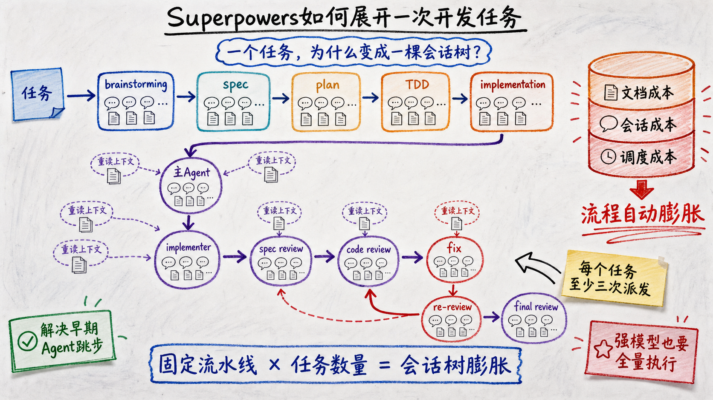
这套流程针对早期coding agent的典型问题：没有澄清需求就写代码，跳过测试，让实现者给自己验收，并在证据不足时宣布完成。现在，强模型本身已经会搜索代码、规划修改、编写测试和检查代码差异。完整Superpowers仍默认展开需求澄清、设计、计划、测试驱动开发、多轮审查与分支收尾，很少根据任务规模缩短流程。
由此产生两个需要实验回答的问题：模型越来越强的今天，还需要为每个开发任务执行整套流程吗？这些步骤在真实任务中究竟补充了需求信息、发现了代码缺陷，还是主要增加了文档、上下文重建与调度成本？本文将围绕真实实验，回答上述问题。
实验设计
实验目标
本实验评估在同一强模型上加入完整Superpowers后，软件交付质量、验收可靠性和资源消耗如何变化，并通过消融实验识别需求澄清与定向代码审查的增量作用。
研究问题
- RQ1（主对照实验）： 完整Superpowers相比原生Codex，产品分和资源消耗如何变化？工作流走完以后，隐藏验收是否可靠通过？
- RQ2（消融实验）： 单独保留需求澄清，以及在此基础上增加一次定向代码审查，分别会带来多少质量收益和资源成本？完整流程是否继续提供稳定增益？
- RQ3（过程分析）： Superpowers新增的Token主要花在代码实现、重复读取上下文，还是主Agent对sub-agent的派发、等待与结果汇总？
实验对照组
模型：GPT-5.6 Terra，推理强度High 工具：Codex 0.145.0
实验对象：
- Bare（原生基线）： 不安装Superpowers或其他工作流能力包。模型仍可使用Codex原生的代码搜索、规划、测试和sub-agent能力。
- Full Superpowers（完整流程组）： 使用同一模型和推理强度，只额外安装固定版本的Superpowers 6.1.1，并要求被测Agent完整进入其需求澄清、设计、计划、实现、审查和验证流程。
每次独立运行是一个实验单位，执行任务的Codex记为被测Agent。同一任务的两组运行使用相同代码起点、公开需求、模型、推理强度、权限、离线环境和停止规则，唯一预设差异是是否安装完整Superpowers。
任务来源
八个任务全部来自已经合并的真实开源项目拉取请求。实验把仓库恢复到对应拉取请求合并前的版本，只向被测Agent提供冻结后的公开任务说明，让模型从同一个起点重新实现该功能。
| 任务 | 真实仓库与拉取请求 | 被测Agent收到的需求摘要 |
|---|---|---|
| GitHub CLI字段选择 | cli/cli#13823 |
为gh project item-list增加按字段名或字段ID选择输出的能力，并处理冲突、诊断和表格渲染。 |
| ESLint自定义错误类 | eslint/eslint#21032 |
扩展preserve-caught-error，允许用户配置需要检查的自定义错误类。 |
| pytest插件入口 | pytest-dev/pytest#14752 |
让环境变量和pytest_plugins也能按插件入口名称加载插件。 |
| pytest配置类型表达式 | pytest-dev/pytest#14751 |
让addini(type=...)支持联合类型、字面量类型及其组合。 |
| bat终端输入净化 | sharkdp/bat#3729 |
增加终端内容净化模式，移除危险控制序列并保留正常文本。 |
| SQLModel参数冲突 | fastapi/sqlmodel#681 |
拒绝字段定义中互相冲突的SQLAlchemy参数，同时保持合法调用兼容。 |
| Axum自定义执行器 | tokio-rs/axum#3704 |
为axum::serve增加自定义任务执行器，并覆盖连接、内部任务和优雅关闭。 |
| Prometheus UTF-8协商 | prometheus/client_python#1102 |
实现指标名称转义、内容协商以及旧格式兼容。 |
Bare与完整流程在每个任务上各独立运行3次，共得到48条主实验轨迹。消融实验选取三种信息结构不同的任务：低歧义的pytest插件入口、安全敏感的bat解析器，以及隐藏契约较多的Prometheus。除主实验的两组结果外，额外运行只做需求澄清”和需求澄清后增加一次定向审查”两个条件，每个条件各2次。
标准答案、交互与评分
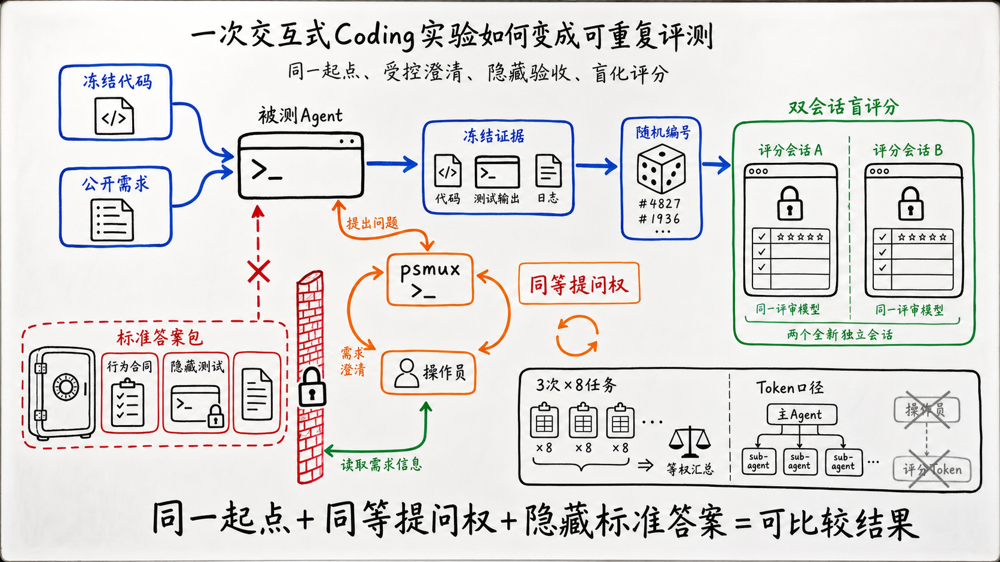
每个任务都有一套Ground Truth，本文称为评测标准答案包”。它来自真实拉取请求最终合并的行为、测试和审查记录，包含行为合同、六维评分标准和隐藏测试。被测Agent只能看到拉取请求合并前的代码与公开任务说明；原始拉取请求、参考实现和评测标准答案均不可见。
需求不清楚时，被测Agent可以向操作员（operator）提问。操作员是实验程序以无头模式启动的独立Agent：没有交互界面，在只读参考工作区中运行，并把回答返回被测Agent会话。它了解评测标准答案，但只能解释产品行为，不能提供代码、路径、补丁或隐藏测试。Bare与完整流程拥有相同的提问权利，所有问答都会记录。Superpowers自己召出的代码审查Agent看不到标准答案，其Token计入完整流程成本。
为了把原本需要人工继续输入的CLI任务变成可重复实验，我用Windows终端复用器psmux保持每条运行的终端会话。被测Agent需要澄清需求或确认设计时，以OPERATOR_QUESTION:结束当前回合；实验程序捕获问题，调用操作员生成回答，再通过psmux把OPERATOR_ANSWER:送回原会话。被测Agent继续使用原来的上下文，直到输出IMPLEMENTATION_COMPLETE。psmux负责维持和驱动交互通道，操作员负责回答问题。
被测Agent结束或超时后，实验程序冻结代码、测试和过程证据，用随机编号隐藏实验条件。随后，同一个固定评分模型在两个独立会话中按照六维标准打分，满分100；隐藏测试的整套通过率单独报告。每个任务先对3次运行求平均，再对8个任务做等权平均。Token统计覆盖主Agent和所有可归因的sub-agent，不包含操作员和评分会话。
两组使用相同代码起点、模型、推理强度、权限、离线环境、操作员协议和评分配置。代码错误、测试失败、审查循环与超时都保留在结果中。这组任务属于有意选择的诊断面板，消融实验每个新增条件只有2次运行，因此本文只报告当前实验范围内的描述性结果。完整隔离规则、评分权重和异常处理见文末附录。
实验结果
RQ1：完整Superpowers是否提高质量，代价是什么？
RA1：在当前八项任务上，完整Superpowers将等权平均分从73.54提高到84.08，增加10.54分；每次运行的Token从2.22M增加到23.44M，约为Bare的10倍。24次完整流程运行有23次走到完成状态，只有16次通过整套隐藏测试。质量收益集中在需求信息缺失的任务，需求明确的任务没有稳定受益。
| 任务 | Bare分数 | 完整流程分数 | 分数变化 | Bare每次Token | 完整流程每次Token | Token倍数 |
|---|---|---|---|---|---|---|
| CLI item-list fields | 79.67 | 100.00 | +20.33 | 1.99M | 23.45M | 11.8× |
| ESLint caught error | 54.83 | 98.17 | +43.34 | 1.54M | 41.42M | 27.0× |
| pytest plugin | 95.00 | 91.33 | −3.67 | 1.38M | 9.46M | 6.8× |
| pytest addini | 79.00 | 89.33 | +10.33 | 2.99M | 20.41M | 6.8× |
| bat sanitize | 85.67 | 85.00 | −0.67 | 4.97M | 50.89M | 10.2× |
| SQLModel constraints | 85.00 | 85.67 | +0.67 | 1.18M | 8.07M | 6.8× |
| Axum executor | 72.83 | 80.50 | +7.67 | 1.58M | 15.99M | 10.1× |
| Prometheus UTF-8 | 36.33 | 42.67 | +6.34 | 2.15M | 17.80M | 8.3× |
| 八项任务等权平均 | 73.54 | 84.08 | +10.54 | 2.22M | 23.44M | 约10× |
- 质量：Superpowers五项明显胜出、两项落后、一项近似持平，八项任务等权平均提高10.54分。
- 成本：八项任务的Token全部增加，范围为Bare的6.8–27倍；平均每次运行从2.22M增加到23.44M。
- 验收： 24次完整流程运行中，16次通过整套隐藏测试，7次流程完成但仍遗漏验收条件，1次bat运行超时。流程完成”只表示工作流结束。
这三组数据共同留下一个问题：八项任务的成本全部上涨，质量收益为什么只出现在部分任务？下面回到四组真实作业现场，看两种被测Agent分别做了什么，以及额外Token最终换来了什么。
场景一：需求上下文不完整（CLI）
CLI原始需求（节选）： Improve
gh project item-listso users can show selected project fields as additional table columns without first looking up opaque field IDs. Support repeatable selection by human-readable field name and an equivalent repeatable field-ID form.”
这项需求说明了目标，却没有列全需求的详细规格，包括参数冲突、字段定义分页、名称歧义、按ID匹配和表格安全渲染等细节仍需要补充。
Bare的作业路径：搜索现有实现，直接改代码、补测试并运行验证。CLI平均只用了29次工具调用和1.99M Token，但没有主动补齐缺失的规格要求，得到79.67分。
Superpowers的作业路径：先通过brainstorming向操作员逐项追问行为边界，再把回答写入设计与计划，随后分派实现、审查和修复。CLI达到100分，代价是228.7次工具调用和23.45M Token。
| CLI条件 | 分数 | 每次耗时 | 每次Token | 每次工具调用 |
|---|---|---|---|---|
| 简略需求Bare | 79.67 | 7.47分钟 | 1.99M | 29.0 |
| 详细需求Bare | 99.67 | 11.32分钟 | 3.16M | 41.0 |
| 完整Superpowers | 100.00 | 44.38分钟 | 23.45M | 228.7 |
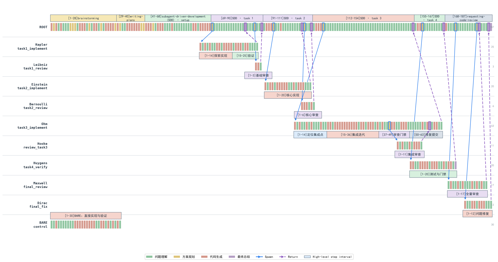
图中左下角是Bare：30个步骤集中完成探索、实现和验证。Superpowers则展开为187步主Agent会话，以及多条实现、审查、复核和修复子会话。长流程确实补出了缺失需求，说明主要收益来自新进入上下文的契约信息。这个场景支持主动澄清需求，无法证明后续每一层流程都同样必要。
场景二：需求明确、改动局部（pytest）
pytest原始需求（节选）： “Extend pytest's explicit plugin loading so that both the
PYTEST_PLUGINSenvironment variable and thepytest_pluginsglobal can name an installed pytest plugin by itspytest11entry-point name, just as-palready can.”
这项任务的目标和落点都比较集中，仓库中也有可复用的现有路径。
Bare的作业路径：pytest Bare找到-p已有的插件入口加载逻辑，让共享的_import_plugin_specs复用它，再补环境变量与pytest_plugins测试。它平均得到95分，消耗1.38M Token。
Superpowers的作业路径：在同一代码路径之外，又讨论更新日志编号、比较设计方案、写设计与计划、等待确认，并增加代码审查和分支收尾。它平均得到91.33分，消耗9.46M Token。
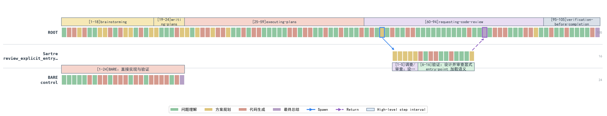
等尺图里，Bare在左下角用24步结束；Superpowers的主Agent会话有105步，另派生一条16步审查会话。新增路径没有带来新的需求信息，分数反而低3.67分。对这类明确、局部、易验证的修改，完整流程引入在带来固定Token成本的前提下反而没有基线版本效果好。
场景三：复杂边界触发审查膨胀（bat）
bat原始需求（节选）： “Add a
--sanitize=<when>option tobatfor safely displaying untrusted content. Sanitizing must remove terminal escape sequences, including 7-bit and 8-bit forms, and replace terminal-active control bytes and Unicode text-spoofing formatting characters withU+FFFD.”
这些名词都是终端控制序列：有的改变文字颜色，有的移动光标，有的控制屏幕内容。清洗器漏掉其中任何一种，恶意文本都可能干扰甚至伪造终端显示，因此这项任务确实需要严格测试和审查。
Bare的作业路径：直接搜索现有ANSI处理逻辑，完成CLI、清洗器和测试修改。它平均使用4.97M Token、49次工具调用，隐藏测试通过2/3。
Superpowers的作业路径：先做需求澄清、设计和计划，再为实现、规格审查、代码审查、复审和修复持续派生sub-agent。完整流程平均消耗50.89M Token、434.3次工具调用，隐藏测试只通过1/3。
| 条件 | 分数 | Token | 耗时 | 工作会话数 | 工具调用 | 等待sub-agent | 隐藏测试 |
|---|---|---|---|---|---|---|---|
| Bare平均 | 85.67 | 4.97M | 14.93分钟 | 0 | 49.0 | 0 | 2/3 |
| 完整流程平均 | 85.00 | 50.89M | 119.26分钟 | — | 434.3 | — | 1/3 |
| 完整流程s-r1 | 86.50 | 74.92M | 227.31分钟 | 14 | 651 | 109 | 失败/超时 |
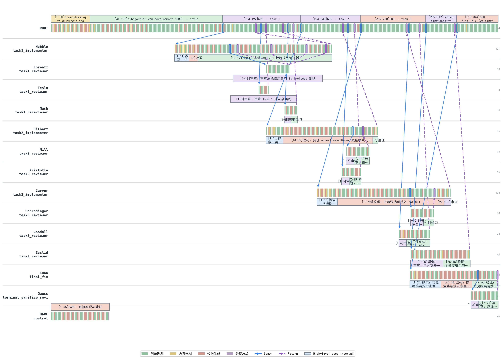
这张图展示了Superpowers如何把一个任务展开成一棵审查树。主Agent先把工作拆成三个实现任务：第一个任务先后派出两个reviewer和一个rereviewer，第二、第三个任务也分别经历多轮review；三项完成后，流程又进入全量review、最终修复，最终修复者再派出一名reviewer。图中的13个sub-agent，主要来自“实现—review—修复—re-review”模板的逐层展开。
13个sub-agent共享同一份计划，只是在已知边界内重复review。结果是整棵会话树消耗74.92M Token并最终超时，平均分和隐藏测试通过率仍低于Bare。更多sub-agent没有带来更多信息，只放大了review与调度成本。
场景四：外部契约没有进入上下文（Prometheus）
Prometheus原始需求（节选）： “Extend the Python client so plain-text and OpenMetrics exposition support the standardized escaping schemes and select them from the HTTP
Acceptheader while remaining compatible with legacy scrapers.”
原始需求包含UTF-8 negotiation、escaping和legacy compatibility，但没有列出公开常量、精确版本号、direct generator API、textfile与gateway等完整契约。
Bare的作业路径：追踪现有exposition与HTTP negotiation代码，直接实现并运行局部测试，平均得到36.33分，消耗2.15M Token。
Superpowers的作业路径：写设计和计划，分别审查各阶段实现，再进入修复与复审。平均分提高到42.67，Token增加到17.80M；三次运行都宣告完成，隐藏测试完整通过率仍为0/3。
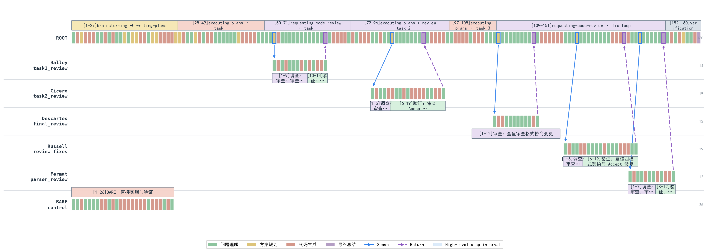
多Agent的价值取决于能否引入新的独立信息。四个sub-agent拿着同一份不完整设计文档反复review，就像一群只按领导指令执行、缺少独立判断的牛马：每个人都很忙，review和汇报一轮不少，最初的错误前提却没人挑战。流程因此从Bare的26步膨胀到160步，三次运行仍然0/3通过隐藏验收。没有新的信息输入，更多Agents只会把同一套理解执行得更加一致。
RQ2：Superpowers的质量增益来自哪些步骤？
RA2：三项小样本消融中，只保留需求澄清的综合投入产出比最高；增加一次定向代码审查后的结果不稳定；完整Superpowers在三个任务上都没有超过更轻量的最佳条件。当前证据支持“按需启用需求澄清”，还不足以判定其余技能全部无效。
消融实验比较Bare、只做需求澄清、需求澄清后增加一次定向审查，以及完整Superpowers四个条件。
| 任务 | Bare | 只做需求澄清 | 需求澄清+定向审查 | 完整Superpowers |
|---|---|---|---|---|
| pytest plugin | 95.00 / 1.385M | 92.25 / 1.759M | 100.00 / 3.716M | 91.33 / 9.461M |
| bat sanitize | 85.67 / 4.974M | 96.25 / 4.962M | 90.75 / 8.066M | 85.00 / 50.893M |
| Prometheus | 36.33 / 2.153M | 44.50 / 1.797M | 41.75 / 6.291M | 42.67 / 17.803M |
单元格是“评分/被测Agent运行Token”。Bare与完整流程各3次，两个中间条件各2次。这组消融只提供探索性证据。
只做需求澄清：bat几乎没有增加Token，评分提高10.58；Prometheus提高8.17；低歧义的pytest下降2.75。需求澄清只在被测Agent缺少产品契约时带来明显收益，代码量和编程语言解释不了这个差异。
增加一次定向review：相对只做需求澄清，pytest增加7.75分，Token增加111%；bat下降5.5分，Token增加63%；Prometheus下降2.75分，Token增加250%。它偶尔能发现真实缺口，整体结果并不稳定，更适合作为已知风险的保险。
完整Superpowers：三个任务都没有超过更轻量的最佳条件。需求澄清可以从操作员获得新信息，review只能检查现有信息，完整流程还要支付计划、上下文重建和多Agent调度成本。当前样本中，流程长度没有呈现出单调的质量收益。
RQ3：Superpowers的Token花在了哪里？
RA3：在8个任务上，完整Superpowers平均消耗23.44M Token/run，约为Bare的10.6倍。代表性trajectory显示，新增成本并不只用于代码实现，而是反复出现在三个层面：实现前的设计与计划、sub-agent的上下文重建及多轮review，以及主Agent的派发、等待与结果整合。CLI和bat的轨迹进一步表明，采用sub-agent-driven路线时，控制面与重复上下文会形成显著成本；当流程没有引入新需求、测试失败或外部证据时，这些额外投入很难转化为质量增益。
下面以bat的s-r1为例，观察这三类成本在一次未收敛的sub-agent-driven运行中如何展开。该运行共消耗74.92M Token。为了避免重复记账，主Agent会话以首次Spawn为界：之前的仓库调查、brainstorming、设计/spec、writing-plans和依赖准备归入前置设计；之后归入编排与整合；所有工作sub-agent和运行时guardian归入sub-agent工作会话。三个数字均来自原始token_count事件。
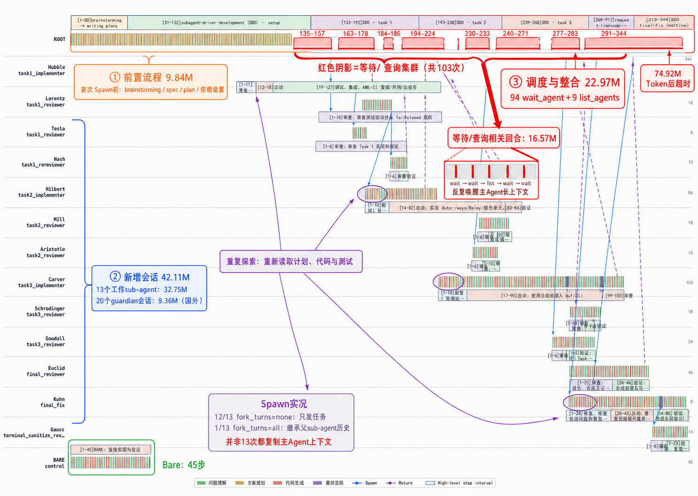
红色阴影把ROOT轨迹中的八组等待和状态查询单独标了出来；紫色箭头指向多个sub-agent重新读取计划、代码和测试的起点。原始Spawn记录显示，13次派发中12次使用fork_turns=none，只发送任务说明；唯一一次fork_turns=all发生在task1 implementer派生内部reviewer时。因此，重复探索主要来自新会话重新读取工作材料，并非13次都复制了主Agent上下文。
| Token成本来源 | 包含的工作 | Token | 占74.92M | 相当于Bare平均4.97M |
|---|---|---|---|---|
| 主Agent前置设计 | 仓库调查、brainstorming、设计/spec、writing-plans、依赖准备 | 9.84M | 13.1% | 2.0倍 |
| sub-agent工作会话 | 13个implementation/review/fix会话＋20个guardian会话 | 42.11M | 56.2% | 8.5倍 |
| 主Agent编排与整合 | 首次Spawn后的派发、等待、状态查询、结果整合 | 22.97M | 30.7% | 4.6倍 |
| 合计 | 34个session文件 | 74.92M | 100% | 15.1倍 |
前置设计的收益集中在brainstorming。它通过操作员补充了需求契约；后续设计/spec和writing-plans主要整理已有信息，没有继续扩大信息边界。代码尚未开始，固定流程税已经形成。
sub-agent执行混合了必要实现和大量重复劳动。implementer真正修改代码，具有直接产出；后续review、fix和re-review始终围绕同一份计划循环。12次
fork_turns=none还要求新会话重新探索仓库、计划和测试，重复探索与上下文重建没有换来新的验收信息。主Agent编排在本次运行中全部成为流程浪费。它执行了94次
wait_agent，等待和状态查询相关回合就消耗16.57M。主Agent没有在这些回合中获得新需求或直接推进实现，最终还停在等待reviewer并超时，22.97M编排成本没有形成可观察的质量收益。
这套工作流的根本问题，是无法区分“需要新信息”和“继续检查旧信息”。没有新的需求、测试或外部证据进入时，新增sub-agent只能重复读取同一份计划和代码，主Agent再为派发、等待和汇总持续付费。
这更像方案已经定稿，十个人围着同一份会议纪要层层会签：有人落实，有人review，有人追进度，却没人去现场验证。签字越来越多，最初遗漏的问题也被包装成了集体共识。
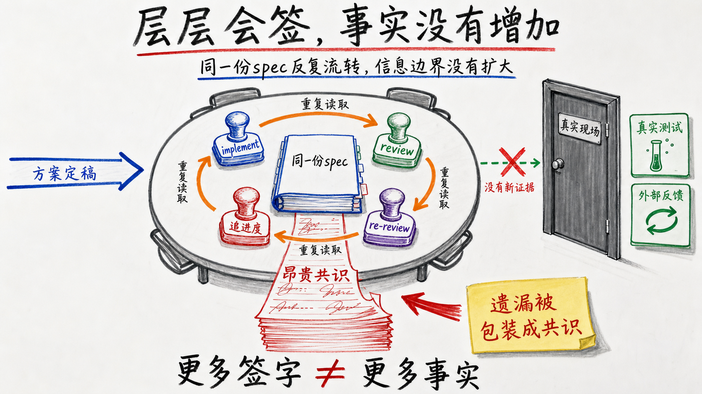
此案例表明，sub-agent数量和流程完成度都不能充当质量代理。Superpowers没有扩大信息边界，只把同一套理解实现、review和修复得更久。这正是它在强模型上从工程约束滑向Token黑洞的机制。
Superpowers的问题：能力包开始接管Agent
Superpowers仍然包含有价值的工程原语。需求模糊时做brainstorming，出现真实失败后系统化调试，结束前运行一次新鲜验证，这些做法都值得保留，真正需要修改的是它对Agent的控制方式。
Hook不该抢方向盘。
hooks.json会在启动、清空上下文和压缩后同步注入完整的using-superpowers；后者又规定，只要有1%的可能适用，就必须在任何回复和操作前调用Skill。能力包应该等待调用，安装后常驻接管每次决策，让我想起了3721上网助手：你装的是工具，最后得到的却是一个很难绕开的流氓软件。先判断任务，再选择流程。
brainstorming明确要求Every project都经过仓库调查、逐轮提问、多个方案、设计确认、写spec、提交spec、用户review和writing-plans，连单函数和配置修改也不例外。改一行配置和开发跨模块功能不该走同一条流水线。Agent需要先判断需求歧义、改动范围和失败成本，再决定直接实现、简短计划或完整设计。给用户选择时，不要提前替用户选择。
writing-plans提供Subagent-Driven和Inline Execution两个选项，却把前者放在第一位并标记为recommended”；executing-plans又要求平台只要支持sub-agent，就优先使用subagent-driven-development。用户每次都能选，产品文案却持续把人推向最昂贵的方案。两个选项应该中立呈现，同时告诉用户预计会启动多少会话、增加几轮review和多少成本。sub-agent必须先证明收益。当前流程中，每个任务默认经过implementer、spec reviewer和code-quality reviewer，所有任务结束后还有final reviewer；发现问题继续fix和re-review，并且明确禁止跳过review。sub-agent适合真正可并行的任务、拥有独立信息的检查，或者确实需要隔离上下文的工作。只是把同一份计划重新读一遍，不值得Spawn。
Superpowers应该是一只工具箱，Agent遇到具体问题时拿出合适的工具。现在的设计更像安装工具箱以后，装修队自动进场：先画图、再开会、再分包、再监理，不管用户只是想拧紧一颗螺丝。
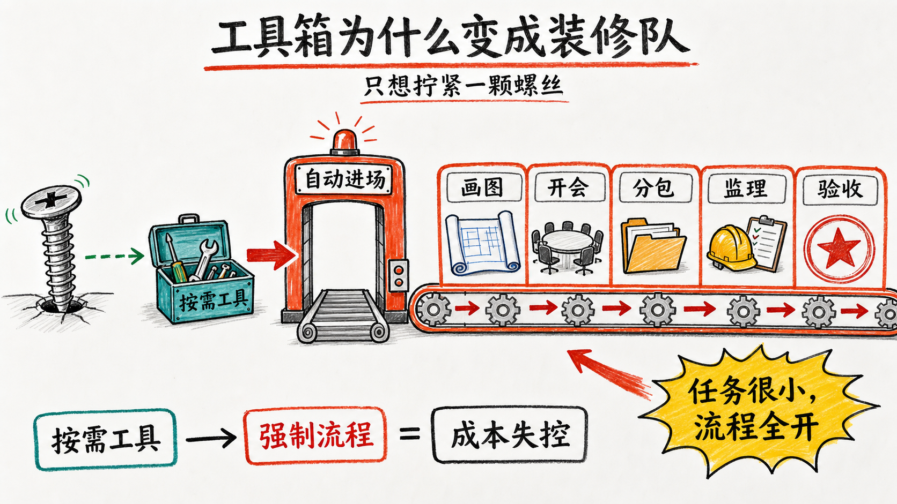
我的个人建议：
保留按需brainstorming、systematic-debugging和verification-before-completion。这三项分别补充需求信息、真实失败证据和完成前验证，收益来源清楚。
取消从brainstorming到spec、plan、sub-agent和多轮review的自动串联。先判断需求歧义、改动范围和失败成本，再动态组合所需Skill。
review由风险触发，不按任务数量触发。公共API、并发、安全和兼容性变更安排一次定向review；普通局部修改直接测试即可。
sub-agent设置明确的Spawn数量、嵌套深度、review轮数和Token预算。派发前先说明它能带来什么独立收益。
没有新需求、新测试失败或新外部证据，就停止继续派Agent。
结语：被淘汰的不是Skills，而是永久有效的通用流程
Superpowers诞生于模型缺乏工程纪律的阶段。它把需求澄清、计划、测试和review固定在模型之外，帮助早期Agent完成更长、更稳定的软件开发任务。这是它获得大量用户认可的原因，也是它真实的历史价值。
现在变化的不是这些工程原则突然失效了，而是能力分层的位置发生了移动。知乎讨论中有人把它概括成“把Harness训进模型”：不必猜测某个模型具体看过哪些Skill，这个说法仍然抓住了现象——规划、工具调用、长期执行、测试和sub-agent调度，正在从外部提示词变成强模型的默认行为。模型已经会做的事情，再由一套强制流程教一遍，收益不会叠加，两套控制逻辑反而可能争夺方向盘。
本次实验正好量出了这种重复。完整Superpowers平均提高10.54分，同时消耗约10倍Token。需求澄清能够带来新的产品信息，真实测试能够带来新的失败证据；计划、多轮review和多Agent调度一旦脱离具体风险，增加的往往不是信息，而是上下文重建、等待和控制成本。
这也是通用流程型Skill难以长期保值的原因。它越通用，越接近模型训练和原生Harness希望解决的问题，也越容易随着模型升级而失去边际价值。把所有公开Skill都判为无用又走得太远：模型可以内化通用工作习惯，却无法在训练时知道当前项目的完整需求、团队刚刚做出的决定、公司内部规则、此刻的运行结果，以及只属于用户的工具和权限。
Skill因此会分成两类。一类教模型“应该怎样思考和开发”，它直接站在模型能力增长的路径上，需要不断接受淘汰；另一类把模型连接到训练数据之外的事实、状态、工具和反馈，这部分不会因为模型更聪明而自动消失。前者更像临时脚手架，后者才是长期基础设施。
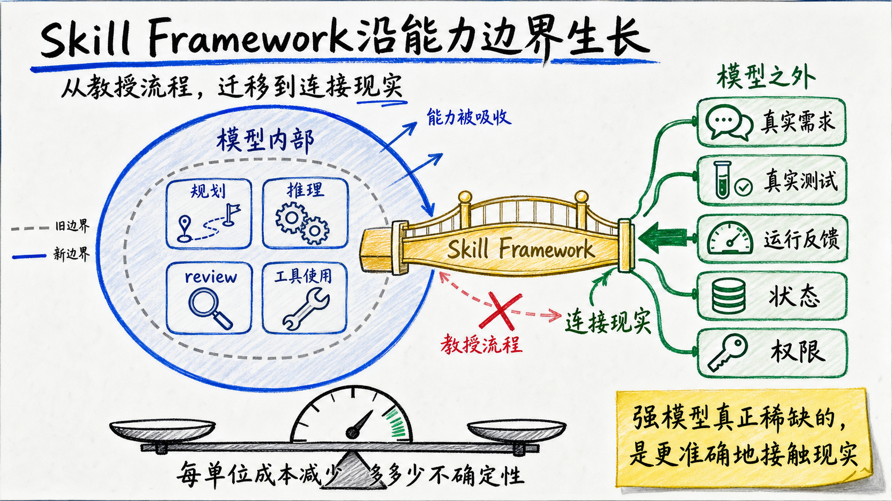
这意味着Skill不能只安装，不退役。每次更换模型或原生Harness，都应该重新运行同一组任务，对比开启和关闭Skill后的质量、Token、耗时与失败率。Skill不是一份永久生效的方法论，而是一个等待实验验证的工程假设。没有可观察的边际收益，就应该删除、降级为按需调用，或者移动到模型尚未覆盖的能力边界。
这里还有一个更根本的问题：共识无法替代真相。多个Agent阅读同一份spec、检查同一份代码，可以让执行更加一致，却无法补回上下文中从未出现的事实。更多reviewer能够形成更强的共识，无法保证这个共识更接近真实世界。正确性最终来自系统与现实的接触，包括用户需求、真实测试、运行结果和外部反馈。
所以，Superpowers没有被强模型整体淘汰。正在被淘汰的是不区分任务、默认执行完整流程的控制方式；仍然值得保留的是按需澄清、基于真实失败的调试和完成前验证。衡量任何Skill Framework的标准也不该是它执行了多少步骤、生成了多少文档、派出了多少sub-agent，而是它消耗一个单位的成本，究竟减少了多少不确定性。
真正能够穿越模型迭代周期的Skill Framework，会沿着模型能力的边界生长：模型已经会的，交还给模型；模型无法预先知道的，让Framework连接到现实。
强模型真正稀缺的，不是更多思考步骤，而是更准确地接触现实。
实验方法附录
下面是用于复核的完整设置，不影响正文结论，可以跳过。
###八个任务、仓库与原始PR
| 任务 | 上游仓库与原始PR | 冻结起点 | 被测Agent收到的需求 |
|---|---|---|---|
| CLI item-list fields | cli/cli#13823 |
ae66a1c |
为gh project item-list增加可重复的--field与--field-id，支持名称或ID选择、错误诊断和正确的表格值渲染。 |
| ESLint errorClassNames | eslint/eslint#21032 |
c30d808 |
扩展preserve-caught-error，允许配置需要检查cause preservation的自定义错误类，同时保持内置错误类兼容，并补齐schema、类型、文档和测试。 |
| pytest plugin entry points | pytest-dev/pytest#14752 |
f1211ba |
让PYTEST_PLUGINS和pytest_plugins能像-p一样引用pytest11 entry point，并保留distribution metadata、terminal header与--traceconfig行为。 |
| pytest addini type expressions | pytest-dev/pytest#14751 |
ef052d0 |
让Parser.addini(type=...)支持基本类型、Union、字符串Literal和混合union，并统一各配置入口的默认值、错误与help。 |
| bat sanitize | sharkdp/bat#3729 |
971f967 |
新增--sanitize=auto\|always\|never：移除终端转义序列，替换危险控制与Unicode欺骗字符，保留正常文本，并贯通CLI、配置、公开API、文档和测试。 |
| SQLModel field constraints | fastapi/sqlmodel#681 |
e4e1385 |
拒绝sa_column、sa_relationship与其他SQLAlchemy参数的矛盾组合，同时保证runtime、typing overload和既有合法调用。 |
| Axum custom executor | tokio-rs/axum#3704 |
309d1bd |
为axum::serve增加自定义task executor，覆盖连接、Hyper内部任务和graceful shutdown，同时保留Tokio默认行为。 |
| Prometheus UTF-8 negotiation | prometheus/client_python#1102 |
d24220a |
为text与OpenMetrics exposition实现标准名称转义和Accept协商，覆盖HTTP、textfile、gateway与安全的旧格式fallback。 |
这是7个仓库中的8个真实任务，pytest提供了两个任务。任务经过有意选择，构成诊断面板，没有从全部软件工程任务中随机抽样。
###评测标准答案与交互协议
PR前源码→单一冻结提交、删除远端→被测Agent运行
PR最终行为与测试→行为合同+评分标准+隐藏测试+操作员→评测侧
被测Agent只能看到代码、仓库规则和公开任务文件task.md。评测侧从上游最终实现和测试中提炼可观察合同，冻结行为合同contract.md、评分标准rubric.md、操作员说明operator-guide.md、定向隐藏测试和只读参考项目。评判只检查行为，被测Agent的补丁可以采用不同于上游的实现结构。
公开需求给出功能类别，隐藏合同固定精确边界。例如bat的被测Agent已经知道要处理终端序列、危险控制字符、Unicode欺骗字符与模式集成；隐藏合同进一步枚举CSI、OSC、DCS、SOS、PM、APC、C1 introducer、截断序列、bare CR和模式优先级。
被测Agent需要澄清时，以OPERATOR_QUESTION:结束当前回合。外层实验程序通过psmux保持终端会话，调用独立的无头操作员生成回答，再用OPERATOR_ANSWER:恢复原会话。被测Agent完成时返回IMPLEMENTATION_COMPLETE，实验程序依次冻结证据、审计运行、盲化评分并汇总结果。
操作员可以回答需求问题，也可以检查被测Agent主动提交的设计是否遗漏可观察行为；不能泄露代码、路径、补丁或测试正文，不能替被测Agent决定实现架构，也不主动审查实现。Bare与Superpowers使用同一套提问权利和回答边界，所有问答原样记录，操作员的Token单独统计。
Superpowers的代码审查者由被测Agent召出，只能看到被测Agent可见的公开任务、设计说明、计划、代码差异与自测。它没有评测标准答案和裁判权限；其消耗全部计入Superpowers被测Agent运行Token。
###评分与聚合
被测Agent结束或超时后，实验程序冻结Git状态、包含未跟踪文件的代码差异、测试输出、过程日志和会话用量，再用随机编号生成评审包。评分模型看到公开任务、隐藏合同、评分标准、匿名代码差异、必要的基线代码和验证输出，看不到实验条件标签与被测Agent自评。
| 任务 | 六项评分维度及权重 |
|---|---|
| CLI | CLI surface 15；解析诊断15；query/pagination 15；渲染25；端到端表格15；安全与维护性15 |
| ESLint | schema/types 15；名称匹配20；全局内置类判定20；参数位置20；安全suggestion 15；文档验证10 |
| pytest plugin | 多入口来源25；module fallback 15；metadata/reporting 20；启动与重写15；文档10；测试15 |
| pytest addini | 类型归一化20；Union 20；Literal 20；默认值/错误/help 15；API文档10；测试15 |
| bat | 集成15；终端序列25；危险字符20；保留与模式15；用户材料10；测试15 |
| SQLModel | column冲突25；relationship冲突15；typing 20；兼容性15；测试15；范围10 |
| Axum | 公共API 20；connection/Hyper 25；shutdown 20；兼容性15；运行测试15；文档范围5 |
| Prometheus | escaping 25；协商/fallback 25；exposition 20；集成15；测试10；范围5 |
每条补丁由同一个固定评分模型在两个全新、无插件、互相隔离的会话中评分。独立”仅指会话与采样独立，不表示使用了两个不同模型，也不构成统计独立或人类双盲。盲化只隐藏实验条件标签，代码形态仍可能泄露工作流线索。
单次运行分数=两个评分会话分数的平均
任务×实验条件分数= 3次运行的平均
八任务总分= 8个任务等权平均
隐藏测试单独报告，不直接兑换评分标准中的分数。前者检查精确验收，后者衡量部分完成度。
###公平性、失败与边界
| 控制项 | 固定设置 |
|---|---|
| 模型 | 被测Agent与sub-agent均为GPT-5.6 Terra、高推理强度 |
| 起点与任务 | 同一pre-PR commit、同一公开task.md |
| 唯一处理差异 | 完整流程组强制使用Superpowers 6.1.1、提交d884ae0；Bare不安装 |
| 权限 | workspace-write、approval never、网络与web关闭、相同依赖缓存 |
| 隔离 | 每次运行使用独立CODEX_HOME，不可见参考实现、隐藏测试、其他运行与盲化映射 |
| 操作员 | 相同提示词、知识边界、模型、只读权限和交互协议 |
| sub-agent | 权利和模型相同，最多4个并发child thread |
| 评测 | 同一行为合同、评分标准、隐藏测试、匿名打包方式和评分模型配置 |
| 重复 | 每格3次；被测Agent失败、测试失败和超时保留，不挑最好的一次 |
认证、模型不可用、隔离破坏和实验程序崩溃属于基础设施失败，保留证据后按原条件重跑；被测Agent写坏代码、陷入审查循环或超时属于产品结果，不能删除。最早一批名义上的Superpowers运行只看见技能目录，却没有加载入口规则，因此整体作废；正文使用修正后的强制入口实验批次。
CLI首轮评审包曾误带docs/superpowers/specs和plans路径，可能泄露treatment。12份评分整体作废并归档；正式评审改用两组对称过滤的product-code.diff后重新运行。
各campaign的冻结上限并不完全相同。正文采用的CLI forced-bootstrap-v9是120分钟、2000万soft-token、最多4个sub-agent；后来五臂campaign是120分钟、30 candidate turns、1亿soft-token和最多4个并发sub-agent。嵌套进程和收尾会使观测wall time越过名义上限，正文仅把跨campaign耗时用于观察量级。
八任务来自多个实验批次，但不能把它们全部称为跨批次拼接。CLI的Bare与完整流程同在forced-bootstrap-v9，ESLint两组也来自同一个六条件实验批次；pytest插件入口、bat、Axum、SQLModel与Prometheus各自在自己的多条件实验批次内对照。只有pytest配置类型表达式的Bare与完整流程分属两个兼容的冻结批次。所有结论仍只是当前模型、任务面板和协议下的描述性结果。
##数据与证据
本文主要数据来自本地冻结实验与原始rollout重建：
sdd-exp/protocol.mdsdd-exp/reports/agentic-coding-workflows-technical-manuscript.mdsdd-exp/reports/superpowers-comprehensive-evaluation.mdsdd-exp/reports/superpowers-necessity-ablation-supplement.mdsdd-exp/reports/superpowers-trajectory-evidence-report.htmlsdd-exp/reports/trajectory-visualization-design.mdsdd-exp/reports/capability-task-score-matrix.mdsdd-exp/packs/tasks/*/task.md与对应的ground-truth/{contract,rubric,operator-guide}.md
实验结论只适用于当前模型、任务面板、固定版本与处理协议。8个任务没有随机覆盖全部软件工程分布；每个实验单元3次运行不足以给出精确总体估计；需求澄清消融同时包含对操作员的访问，不能把全部增益归因于Skill文本；执行轨迹用于解释过程，不能单独证明因果。本文使用约数10倍”，避免把不同计量口径下的小数差异写成虚假的精确性。
相关外部材料：
- obra/superpowers
- Issue #750：高Token与review loop
- Issue #1120：简单任务触发多Agent review
- Issue #350：sub-agent嵌套重走Superpowers
- Reddit：Why I removed Superpowers
- Reddit：删除Superpowers后额度消耗明显下降
- Reddit：Superpowers是否已经overkill
- Reddit：Superpowers burned through my limit
- Reddit：Are Superpowers overkill for Opus?
- 知乎：为什么Codex搭载GPT-5.6后，越来越多用户开始弃用Skills？